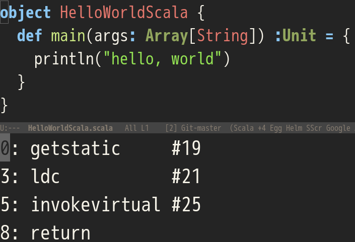
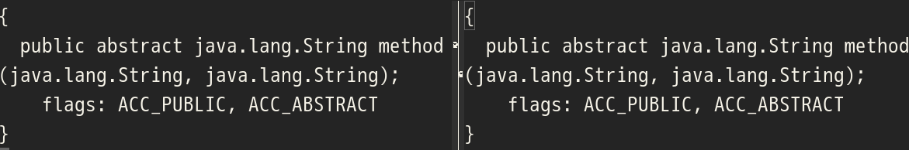

Your browser doesn't support the features required by impress.js, so you are presented with a simplified version of this presentation.
For the best experience please use the latest Chrome, Safari or Firefox browser.
熱血!Scala入門
shigemk2 でググってください

今日はScala初心者がScalaのクラスファイルについて話します
クラスファイルはScalaやJavaでコンパイルしたあとに出来る中間ファイルのことです
この本は名著 熱血!アセンブラ入門にわりとインスパイヤされたパチモンです
熱血!アセンブラ入門P3より

Scalaのクラスファイルをフィーリングでなんとなく読んでみよう
Scalaのクラスファイルを読む前に、まずはJavaのクラスファイルを読んでみる
JavaのHello, World
public class HelloWorldJava {
public static void main(String[] args){
System.out.println("Hello, world.");
}
}
コンパイルと逆アセンブルのコマンド
javac -g HelloWorldJava.java
javap -v -p HelloWorldJava
逆アセンブル結果(一部)

さっくりとした構成
前置き部分
Classfile /home/shigemk2/projects/github.com/shigemk2/scala_jvm/HelloWorldJava.class
Last modified 2015/05/26; size 547 bytes
MD5 checksum fe3b93e48c1c3ce255c71714786c4dcd
Compiled from "HelloWorldJava.java"
public class HelloWorldJava
SourceFile: "HelloWorldJava.java"
minor version: 0
major version: 51
flags: ACC_PUBLIC, ACC_SUPER
定数プール

本体
前置きとか定数プールとかは無視して、本体のところだけ読んでいきます
Hello, World
Hello, World JavaとScalaを比べてみよう
Hello,World本体(Java)
public class HelloWorldJava {
public static void main(String[] args){
System.out.println("Hello, world.");
}
}
逆アセンブル結果
0: getstatic #2 // クラスフィールド読み込み
3: ldc #3 // 文字列読み込み
5: invokevirtual #4 // printlnメソッド呼び出し
8: return // return void
Hello,World本体(Scala)
クラスフィールド読み込み
文字列読み込み
printlnメソッド呼び出し
return Unit

おんなじだ！
FYI: もとのコードをJD-GUIでデコンパイルすると
こうなる(コンパイル不可能)
たぶんJD-GUIがうまくない
加算プログラム
加算プログラム

加算プログラム(他のところは省略)
加算プログラム(他のところは省略)
0: 定数1→スタック
1: スタックの値→ローカル変数2
2: ローカル変数2→スタック
3: 定数2→スタック
4: スタックの値を加算
5: 加算したスタックの値→ローカル変数2
加算プログラムの流れ

ポイント
スタックとローカル変数間でデータのやりとりをしている
クラスファイルにはレジスタがない
Scalaのメソッドはstaticじゃないので、ローカル変数に最初からthisとargsが入る
関数呼び出し
関数呼び出し
関数呼び出しの流れ
method部分
main部分
val a = 1
method(a)
Interface vs Trait
Interface vs Trait
どっちも2つのクラスファイルが出てくるけど、InterfaceとTraitのほうをみます。
コード

逆アセンブル

なんかもう全部いっしょや
再帰
再帰
コード

逆アセンブル
ポイント
Javaのswitch文プログラムはtableswitchに逆アセンブル
ScalaのパターンマッチはJVM的にはSwitch
再帰が終わるまでnewしてdupしている
末尾再帰
末尾再帰
fact部分の逆アセンブル
go部分の逆アセンブル

ポイント
普通の再帰と比べてアセンブルも短め
newとかdupとかしてない
まとめ
まとめ
JavaとScalaはなんとなく似ているが、メソッドまわりで微妙に違うことを思い…出した
クラスファイルをなんとなく読むのは間違っていただろうか
なんとなく読むこととなんとなく読ませることは絶望的に違う
おしまい